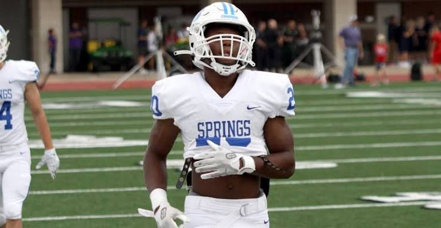
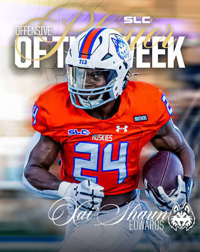
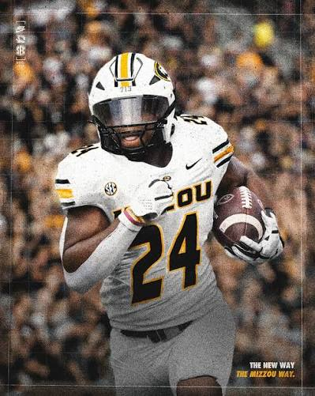

My Football Career
Football has been a big part of my life. Each school and team has helped me learn new things, helped me work on my craft, and work toward my goals. these are 3 things that made this possible.

My high school football experience
Clear Springs High School
Clear Springs was an important part because this is where I started building my skills and learning what it takes to get better.
Playing football taught me about teamwork, hard work, and staying focused. This helped me get ready to go to college.

My time playing at Houston Christian
Houston Christian University
My time at Houston Christian was a big step in my football career. Having a good season helped me see what I could accomplish and gave me new opportunities.
This experience pushed me to keep working hard and look for new ways to improve. It also helped prepare me for the next level of college football.

My football journey at Missouri
University of Missouri
Being at the University of Missouri gives me a chance to compete at the SEC level and challenge myself in a new environment.
I want to keep learning, improving, and making the most of every opportunity. My biggest goal is to continue growing as a player and work toward my dream of playing in the NFL.